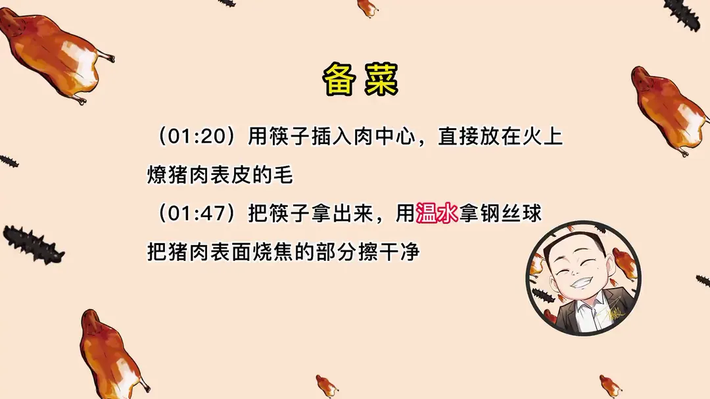
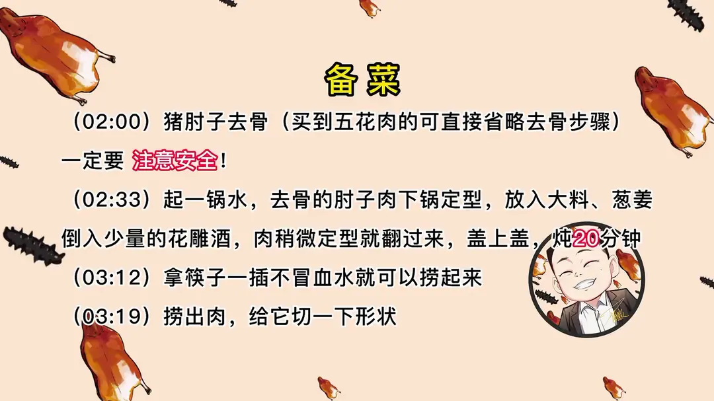
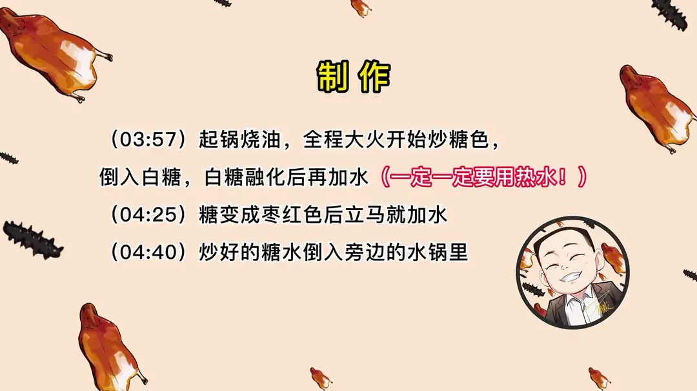
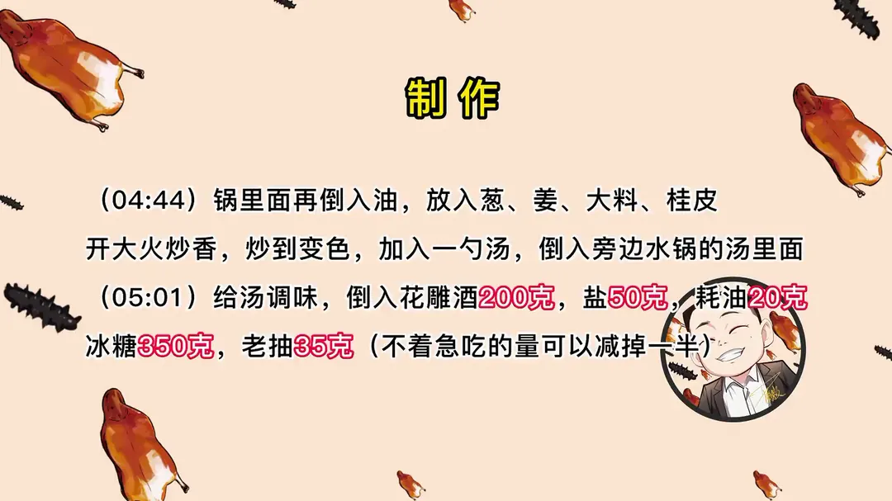
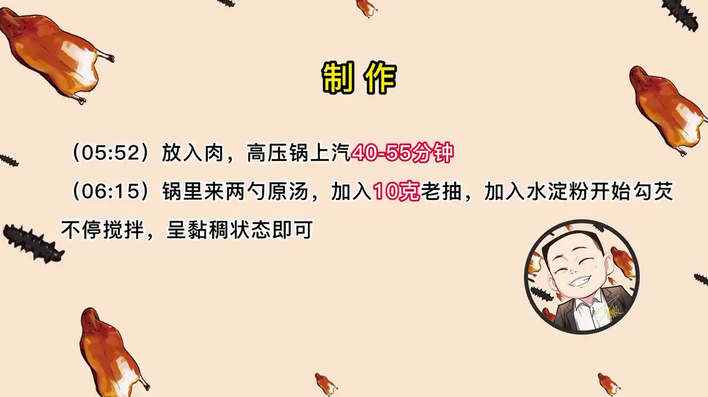

宫廷十方肉
隋卞一做。主料猪肘子，买得到五花肉可省去去骨。关键是燎毛洗净后下锅炖定型，用热水炒糖色，重口调味再高压压透。
原视频：https://www.bilibili.com/video/BV1LK411C7DE
食材
猪肘子、花雕酒、冰糖 等 13 样
| 类别 | 用料 | 用量 |
|---|---|---|
| 主料 | 猪肘子（或五花肉） | 适量 |
| 香料 | 大料 | 适量 |
| 香料 | 桂皮 | 适量 |
| 香料 | 葱 | 适量 |
| 香料 | 姜 | 适量 |
| 调味 | 花雕酒 | 200g |
| 调味 | 盐 | 50g |
| 调味 | 蚝油 | 20g |
| 调味 | 冰糖 | 350g |
| 调味 | 老抽 | 35g |
| 炒糖色 | 白糖 | 适量 |
| 勾芡 | 老抽 | 10g |
| 勾芡 | 水淀粉 | 适量 |
步骤
- 燎毛：用筷子插入肉中心，直接放在火上燎猪肉表皮（猪皮）的毛。把筷子拿出来，用温水拿钢丝球把猪肉表面烧焦的部分擦干净。
- 去骨：猪肘子去骨，买到五花肉的可直接省略去骨步骤。一定要注意安全。
- 下锅定型：起一锅水，去骨的肘子肉下锅定型，放入大料、葱姜，倒入少量的花雕酒，肉稍微定型就翻过来，盖上盖炖 20 分钟。
- 捞出切形：拿筷子一插不冒血水就可以捞起来，捞出肉后给它切一下形状。
- 炒糖色：起锅烧油，全程大火开始炒糖色。倒入白糖，白糖融化后再加水（一定一定要用热水），糖变成枣红色后立马就加水，炒好的糖水倒入旁边的水锅里。
- 炒香料：锅里面再倒入油，放入葱、姜、大料、桂皮，开大火炒香，炒到变色，加入一勺汤，倒入旁边水锅的汤里面。
- 调味：给汤调味，倒入花雕酒 200g、盐 50g、蚝油 20g、冰糖 350g、老抽 35g（不着急吃的量可以减掉一半）。
- 高压：放入肉，高压锅上汽 40–55 分钟。
- 勾芡：锅里来两勺原汤，加入 10g 老抽，加入水淀粉开始勾芡，不停搅拌，呈黏稠状态即可。
小贴士
- 炒糖色加水一定用热水，糖变成枣红色后要立马加水。
- 不着急吃的，花雕酒、盐、蚝油、冰糖、老抽的量可以减掉一半。
- 能买到五花肉可直接省略去骨步骤；去骨时注意安全。
讲解要点
难度：★★★☆☆（家庭灶台可做，难点在炒糖色的火候和上色的浓淡）
为什么这么做
- 先燎毛再擦洗：火燎把残毛烧成焦化层，温水钢丝球一擦就掉；毛燎不净吃肉时会扎嘴。
- 选前肘而不是五花：前肘肥瘦合适、成本低，比肥厚的五花更不容易腻；后肘带屁股肉，会更肥。
- 先焯水定型再切形状：断生后肉才立得住，能把表面修得方正，成品才不会散。
- 炒糖色用热水、枣红即加：糖色到枣红色只需一秒，冷水会让糖瞬间凝固、油点飞溅；加在旁边的水锅里也不会糊锅。
- 冰糖比白糖更柔和：大剂量下冰糖甜得更圆，糖色本身又让颜色红亮，不用堆老抽。
- 料重是因为「着急吃」：花雕、盐、蚝油、冰糖、老抽给得足，压 40 分钟就能透；不着急吃可减半，靠泡一夜入味。
- 原汤加老抽勾薄芡：芡汁挂在肉面上才有油亮感，太稠会糊成一层。
容易翻车
- 去骨时一定注意安全，在家处理不了就让卖肉的师傅代劳。
- 糖刚融化时别动，冒大泡的时候再快速搅，全程大火也没问题。
- 高压锅上汽 40 分钟，想更烂可再加 10–15 分钟；关火别急着开盖，泡一夜第二天加热最像店里。
热评补充
- 姜皮不必扔：小整姜的边角料用来泡葱姜水、炖肉焯水，好姜切丝姜末，物尽其用。
原片尾卡





原片文案
AI 字幕校准稿
你们太热情了，说让你们点赞到六万就给你们复刻鼎泰丰的那个十方肉，结果你们一天就点够了。我先尝尝鼎泰丰的十方肉是什么东西：炖得很烂，上面这个皮已经变成胶质了，进嘴一抿就化，甜味很重，但甜度够了，吃着反倒没那么腻。行，这么复刻，搞定，等着啊，一百六十八一块。
这是一百六十八一块的鼎泰丰十方肉，我让小李买了一块五花肉，他给我买得贼肥，那膘比我手都厚，我又换了个肘子。这个肘子是猪的前肘，前肘肥瘦比较合适，后肘带着屁股蛋子那一块，会稍微肥一点。第一步先去毛，把毛燎干净。用刀刮没有烧的干净，家里简单的工具用筷子就行，插在肉里直接放火上燎，用火的外焰，温度最高，皮烧不坏。一燎表皮就是黑点点，黑点多的地方多燎一会儿，燎到虎皮色、表皮发黑，毛就全焦化了；毛燎不干净，一会儿吃的时候会扎嘴。把筷子拿出来，用温水加钢丝球把它擦干净。
然后给它去骨。你们能买到五花肉就不用吃这个了，当然肘子会比五花肉瘦一些。不会剔的，买肘子的时候问问卖肉的那位能不能帮你剔了，交点手续费，安全第一。去骨的肘子肉打一打花刀，便于入味和定型。
然后下锅，放上大料、葱姜——我们用的姜其实是用姜皮，姜皮就是用来焯水、炖菜的，物尽其用不浪费。里边倒上点花雕酒，把肉放进去。这个水我们不用、也不喝这汤，所以不用撇沫子。稍微定一下形式，给它翻过来，盖上盖，20 分钟以后再看。
断生了，掀开看一眼，一插不冒血水就可以了，捞出来修一下形状，切下来的肉等会儿也放锅里一块炖，就当今天的晚饭了。底部也削平。有人问表面怎么不平？它里面是肌肉组织，我们吃的那种肯定是工厂加工、定型的，不是师傅手工做的。这个并不是讽刺，人家挺好吃的。
起锅烧油，倒白糖，加水，全程大火，你掌握不好就中火。糖刚融化的时候你甭搭理它，冒大泡、咕嘟咕嘟冒得特别快的时候，勺子搅得快一点。你看炒了半天，锅边上一滴糖都没沾，就是一开始放的那点油起的作用。旁边一定要做一锅热水，糖色一定要加热水，最后成功就是一秒的事，变成枣红色立马加热水。颜色绝对红，嫌麻烦，用红曲米兑点老抽也行。把糖色倒进旁边的水锅里，锅里再倒点油，葱姜、大料、桂皮炒香，一变色就倒进汤里。
汤颜色黑乎乎的，行了。然后给汤调味：花雕酒、盐、蚝油、冰糖，冰糖的甜味会更柔和一些，再加点老抽调调色。盐味不够，酒香不够，白糖也不够，这一锅就出这点货。为什么给这么足的料？因为着急吃；您要是不着急吃，这个料可以减掉一半。把肉放进高压锅，盖上盖，上汽 40 分钟。时间到了，开锅看一眼，颜色还是非常漂亮的，烂也够烂了。
锅里来两勺原汤，又补了 10 克老抽，勾芡，不停搅拌到粘稠，这样就可以了，把汁儿浇上去，就是你们要了很久的宫廷十方肉。快来尝尝。有甜味，肉肥而不腻，胶原满满，我觉得特别下饭，这肥肉的部分特别像吃果冻的感觉。
我们炖的时间肯定没有鼎泰丰那么长，第一他那肯定是提前预制好的，咱现在炖了 40 分钟，可以再加上十到十五分钟，因为猪的年龄不一样。关火别动，可以开盖泡它一夜，凉了之后再拿出来，第二天重新加热，就跟鼎泰丰的一模一样了。